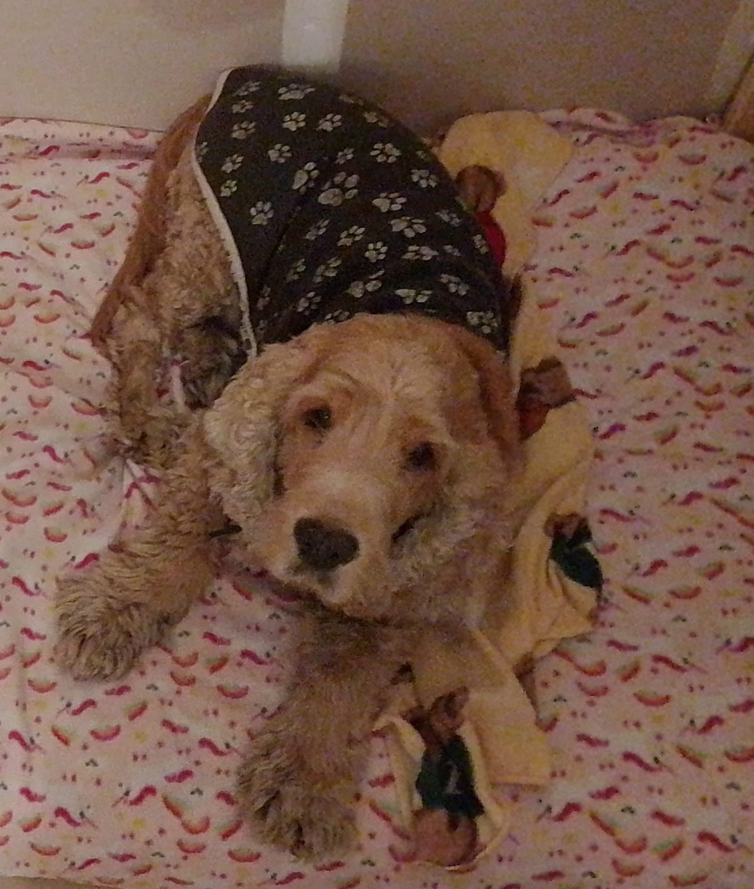
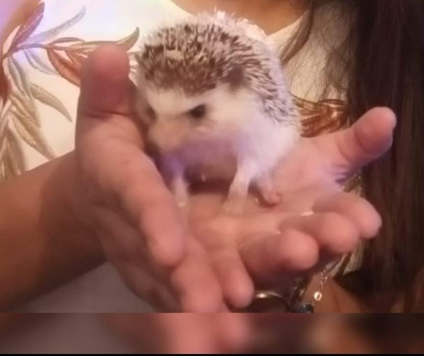
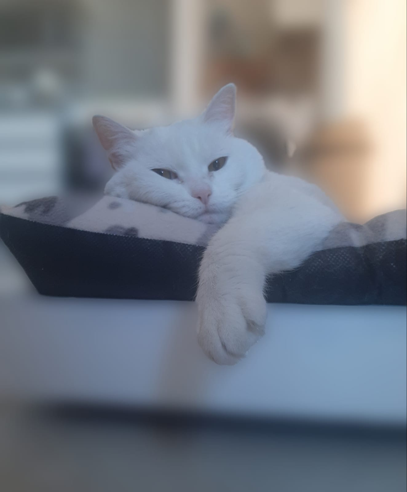
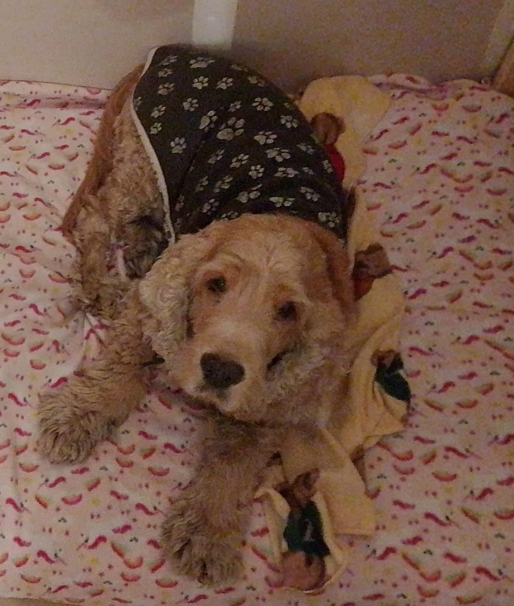
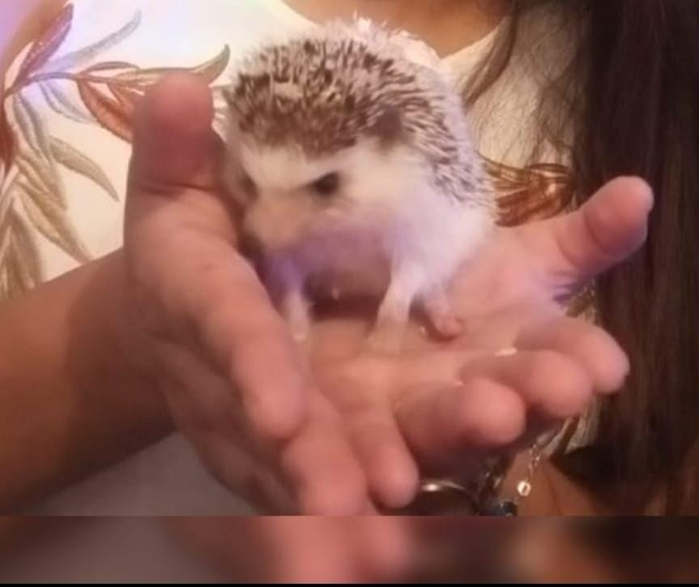
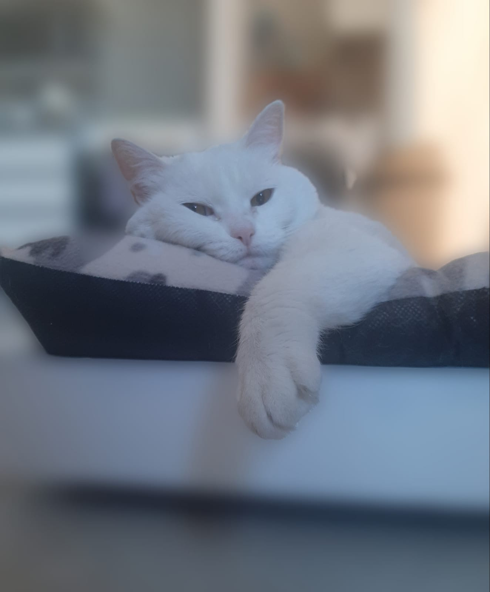

Servicios Funerarios para Mascotas
Cremación Individual
Servicio exclusivo con urna y certificado.
Cremación Colectiva
Alternativa económica con respeto.
Retiro a Domicilio
CABA y Gran Buenos Aires.
Memorial
 





Preguntas Frecuentes
- ¿Las cenizas son de mi mascota? Sí, en cremación individual.
- ¿Tiempo de entrega? Entre 72 hs y 10 días.
Contacto
WhatsApp: 5491136584970
Email: cremacionessiempreatulado@gmail.com